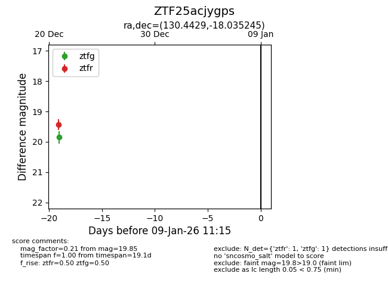
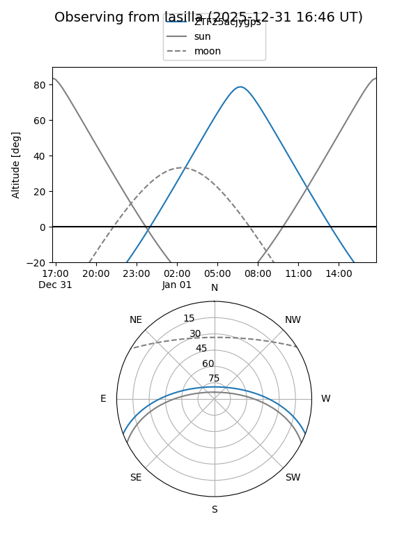
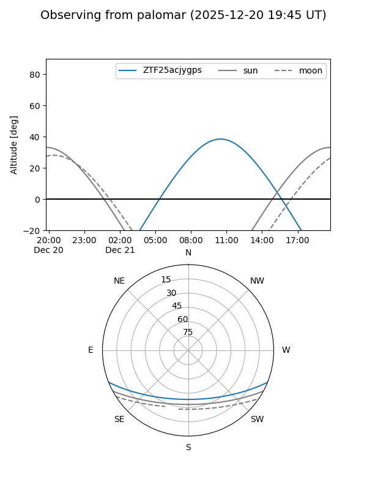

ZTF25acjygps
Target ZTF25acjygps at 2025-12-21 09:58
Aliases and brokers:
FINK: fink-portal.org/ZTF25acjygps
Lasair: lasair-ztf.lsst.ac.uk/objects/ZTF25acjygps
ALeRCE: alerce.online/object/ZTF25acjygps
alt names
ZTF25acjygps (ztf,fink_ztf)
Coordinates:
equatorial (ra, dec) = 130.4429,-18.03524
equatorial (HMS+DMS) = 08:41:46.29,-18:02:06.88
galactic (l, b) = (242.4051,+14.51762)
Flags:
Photometry:
last ztfr=19.43
1 ztfr detections
Lightcurve

Visibility


Additional plots